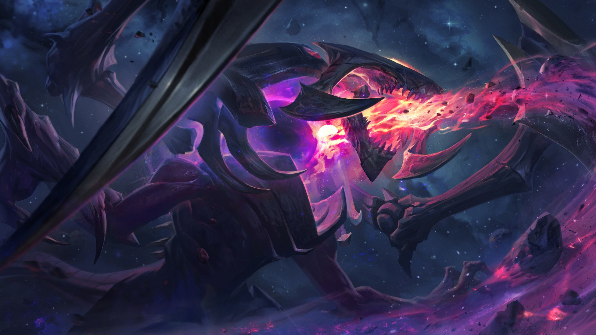

A partir do momento em que Cho'Gath emergiu da terra para a luz do sol ofuscante de Runeterra, a besta foi motivada por pura fome insaciável.
A mais perfeita expressão do desejo do Vazio de consumir toda a vida, a biologia complexa de Cho'Gath rapidamente converte matéria em crescimento corporal novo, aumentando sua massa e densidade muscular ou endurecendo sua carapaça externa como um diamante orgânico.
Quando crescer não supre as necessidades dessa criatura do Vazio, ele vomita o material em excesso como espinhos afiados, deixando sua presa espetada e pronta para ser devorada mais tarde.
